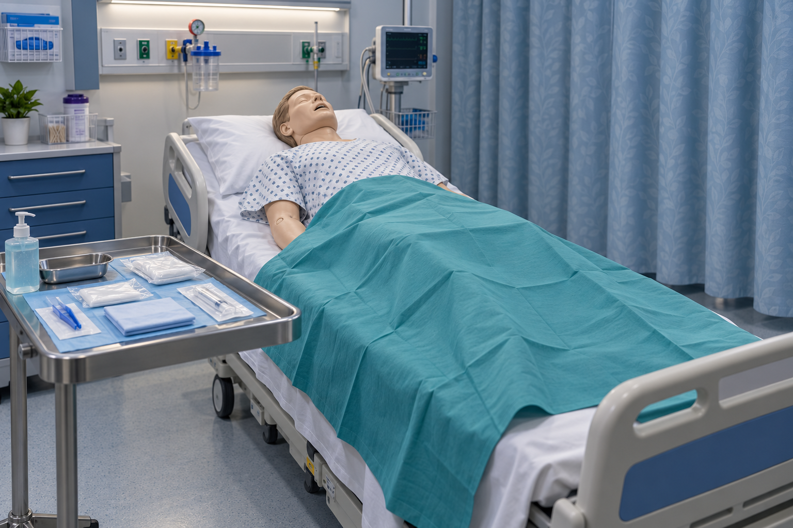

ESTACIÓN 01 / CUIDADO UROLÓGICO
Cateterismo vesical
MONITOR DOCENTE DATOS SIMULADOSTiempo de escenario
Ritmo y respiración
ilustrativos · sin interpretación diagnóstica
FC lpm104
FR rpm22
PA mmHg · guion154/88
Dolor referido8/10

VISTA GENERALExplora la estación
RESPIRACIÓN
SIMULADA
RESPUESTA DEL PACIENTE · GUION
Vejiga
900 mL
900 mL
Esperando acceso a la vejiga
Volumen y tiempo de evolución programados; no equivalen a diuresis horaria.
Colector
0 mL
0 mL
Bandeja de materiales
Selecciona o arrastra un material a la escena.Control del expositor · activar respuestas del maniquí
Activa un evento durante la etapa correspondiente. El monitor y el flujo cambian; el avance queda bloqueado hasta atenderlo.
Cada evento es un guion deliberado. La técnica correcta no garantiza estos valores ni excluye complicaciones en un paciente.
Reflexión de la práctica
¿Se mantuvo la esterilidad? ¿Qué cambió en el paciente? ¿Qué comprobaste antes de inflar el balón? ¿Qué comunicarías con SAER?